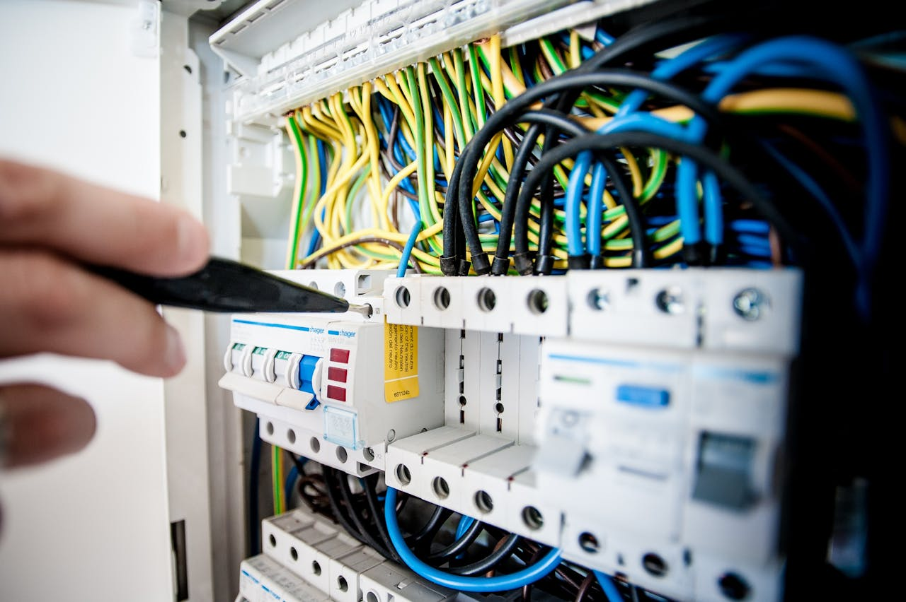
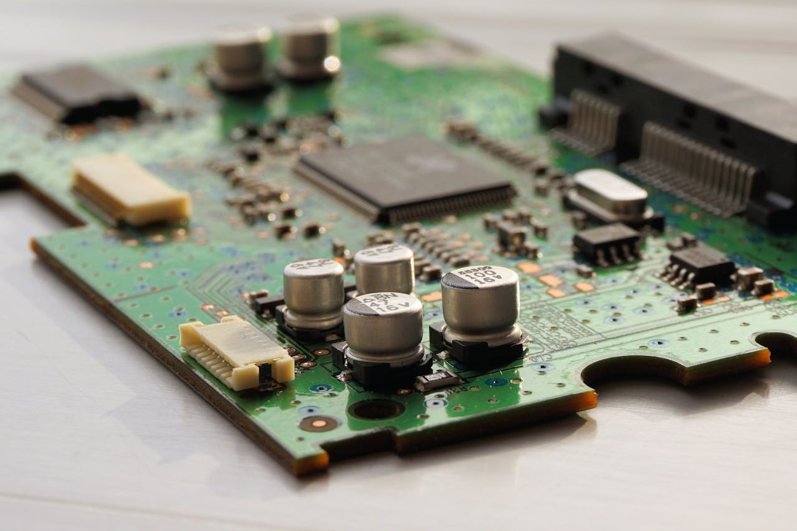
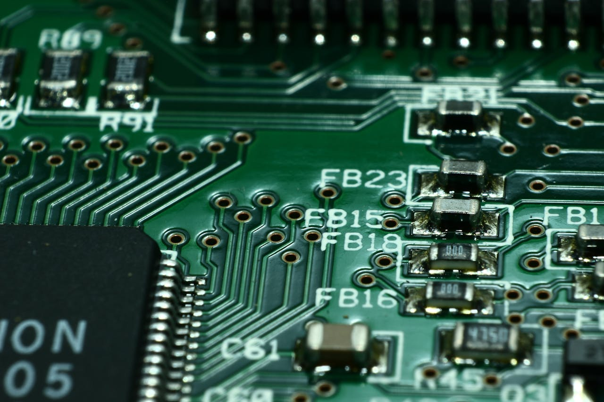

Electromagnetic interference (EMI) is one of the most common challenges in electronic product development. Many issues originate at the PCB design stage but impact the entire system.
Poor EMI control can lead to compliance failures, unstable performance, and costly redesigns. Understanding the root causes is essential for improving product reliability.
1. Poor Grounding Design
Improper grounding is one of the leading causes of EMI issues. Discontinuous ground planes and poor return paths increase noise and radiation.

Grounding problems are also a major reason hardware prototypes fail EMC testing.
2. High-Speed Signal Routing Issues
High-speed signals generate electromagnetic emissions if routing is not optimized. Long traces and improper layout can act as antennas.

Controlling trace length and impedance is critical for reducing interference.
3. Power Supply Noise
Switching power supplies are a significant source of EMI. Poor filtering and layout can spread noise across the entire system.

Effective decoupling and filtering are essential to maintain system stability.
4. Inadequate Shielding and Isolation
Lack of proper shielding allows noise to escape and interfere with other components or external devices.

Mechanical design plays a key role in EMI control. Learn more about structural design risks in smart devices.
5. Poor Component Placement
Component placement affects signal integrity and noise coupling. Poor layout increases interference between circuits.
These design mistakes are common in early development stages. See common prototype design mistakes.
Conclusion
EMI problems in PCB design are not isolated issues — they affect the entire product system and compliance performance.
By improving grounding, routing, and system-level design, companies can reduce interference risks and improve certification success rates.